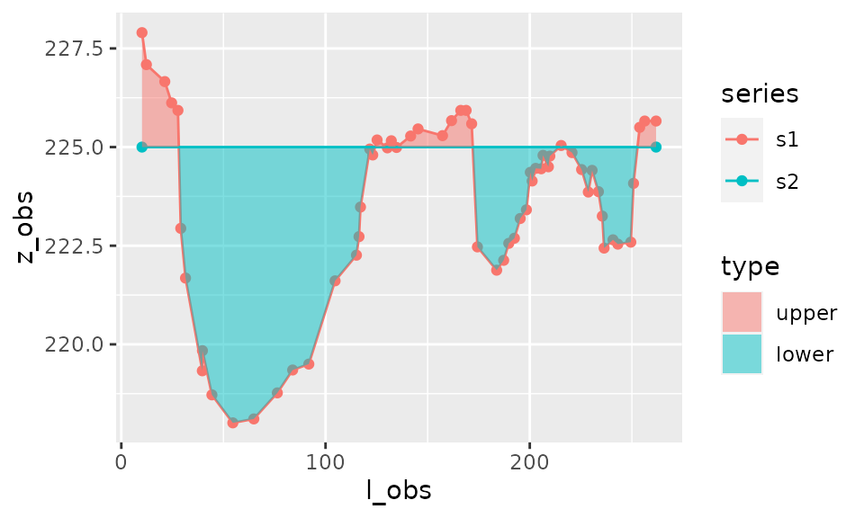

riverbed
L. Vaudor
10 juillet 2018
riverbed.Rmdlibrary(riverbed) s1 <- tibble(l=c(1.1,3.4,5.0,5.3,6.2,4.3,2.5,6.7,6.9,9.2), z=c(1.4,3.1,5.5,4.8,1.3,2.5,4.3,2.2,3.1,2.6)) s2 <- tibble(l=c(0.5,2.5,4.0,6.0,4.4,5.8,9.5,7.2), z=c(2.8,1.5,2.2,4.3,5.5,2.2,1.5,5.3))
We consider two longitudinal series \(s_1=(l_1,z_1)\), and \(s_2=(l_2,z_2)\):
To calculate the area between the curves we need to interpolate the data and calculate intersects between the two curves:

This, as well as the calculation of corresponding trapezia, is realised by the function area_between().
result_area <- area_between(s1,s2) result_area
## $data
## # A tibble: 42 x 15
## l z1 p z2 a type l_obs z_obs series z1min z1max
## <dbl> <dbl> <chr> <dbl> <dbl> <chr> <dbl> <dbl> <chr> <dbl> <dbl>
## 1 0.5 NA obse~ 2.8 NA <NA> 0.5 2.8 s2 NA NA
## 2 1.1 1.4 obse~ 2.41 0 <NA> 1.1 1.4 s1 NA NA
## 3 1.1 1.4 inte~ 2.41 -0.187 lower NA NA s2 NA NA
## 4 1.47 2.17 inte~ 2.17 NA lower NA NA <NA> NA NA
## 5 1.47 2.17 inte~ 2.17 1.44 upper NA NA <NA> NA NA
## 6 2.5 4.3 obse~ 1.5 0 <NA> 2.5 4.3 s1 NA NA
## 7 2.5 4.3 obse~ 1.5 1.79 upper 2.5 1.5 s2 NA NA
## 8 3.4 3.1 obse~ 1.92 0 <NA> 3.4 3.1 s1 NA NA
## 9 3.4 3.1 inte~ 1.92 0.504 upper NA NA s2 NA NA
## 10 4 2.70 inte~ 2.2 0 <NA> NA NA s1 NA NA
## # ... with 32 more rows, and 4 more variables: z2min <dbl>, z2max <dbl>,
## # lmin <dbl>, lmax <dbl>
##
## $area
## [1] -1.257652
##
## $area_by_type
## # A tibble: 2 x 2
## type area
## <chr> <dbl>
## 1 lower -6.24
## 2 upper 4.99
##
## $sigma_area
## [1] 0The output of the function corresponds to
- total area between curves (i.e. positive area - negative area)
- area between curves according to whether first curve is above the second curve (“upper”) or below (“lower”)
- data with all coordinates of interpolated points and intersects, used to calculate the area of trapezia (and which will be used by function
plot_area())
Note that it is also possible to calculate the area between one longitudinal series \(s_1=(l_1,z_1)\) and a constant horizontal value \(h\).
result_area_h <- area_between(s1,h=2)
Plot of area
plot_area(result_area)

If the distinction between upper and lower area is irrelevant then it is possible not to distinguish these two types on the plot:
plot_area(result_area,distinguish_type=FALSE)

The plotting function plot_area() can also be used with just one series and constant horizontal level \(h\), as calculated earlier:
plot_area(result_area_h)

Error in the calculation of area
Now suppose that the series \(s_1\) and \(s_2\) are measured with a certain level of uncertainty, due to
- imprecision in the measure of height \(z\) (\(\sigma_z\)) and/or
- imprecision in the measure of longitudinal coordinate \(l\) (\(\sigma_l\)).
These imprecisions might be different for the two series (change in sampling protocol, improvement in sampling gear between two dates, etc.).
The uncertainty in measures results in a certain amount of uncertainty in the estimate of area between the two curves. This is provided by the function area_uncertainty().
Here, with errors in the measures of height (0.1 and 0.3) higher than in the measures of longitudinal coordinates (0.05 and 0.2), and errors more important for series \(s_2\) (0.3 and 0.2) than for \(s_2\) (0.1 and 0.05).
result_area <- area_between(s1,s2, sigma_z=c(0.1,0.3), sigma_l=c(0.05,0.2))
The plot_area() function can provide a visual hint of the uncertainties in \(l\) and \(z\) measures with horizontal and vertical error bars:
plot_area(result_area, show_uncertainty=TRUE)
Here, for instance,
- The estimate of area is -1.26.
- The uncertainty in measures results in an error in the estimate of area of \(\sigma_{area}\)=1.1. Hence we have a 95% confidence interval for the estimate of area of \([A-1.96\cdot\sigma_{area}, A+1.96\cdot\sigma_{area}]\)=[1.21,-3.72].
We can check the calculation of error through a simple simulation with 1000 series \(s_{1tmp}\) and \(s_{2tmp}\) varying around \(s_1\) and \(s_2\) respectively, with variations corresponding to estimation errors \(\sigma_z\) and \(\sigma_l\):
set.seed(33) sigma_z=c(0.1,0.3) sigma_l=c(0.05,0.2) f=function(i){ s1_tmp <- tibble(l=s1$l+rnorm(nrow(s1),0,sigma_l[1]), z=s1$z+rnorm(nrow(s1),0,sigma_z[1])) s2_tmp <- tibble(l=s2$l+rnorm(nrow(s2),0,sigma_l[2]), z=s2$z+rnorm(nrow(s2),0,sigma_z[2])) return(area_between(s1_tmp,s2_tmp)$area) } area_vals=purrr::map_dbl(1:1000,f) sd(area_vals)
## [1] 1.162812res=area_between(s1,s2, sigma_z=sigma_z, sigma_l=sigma_l) res$sigma_area
## [1] 1.099483